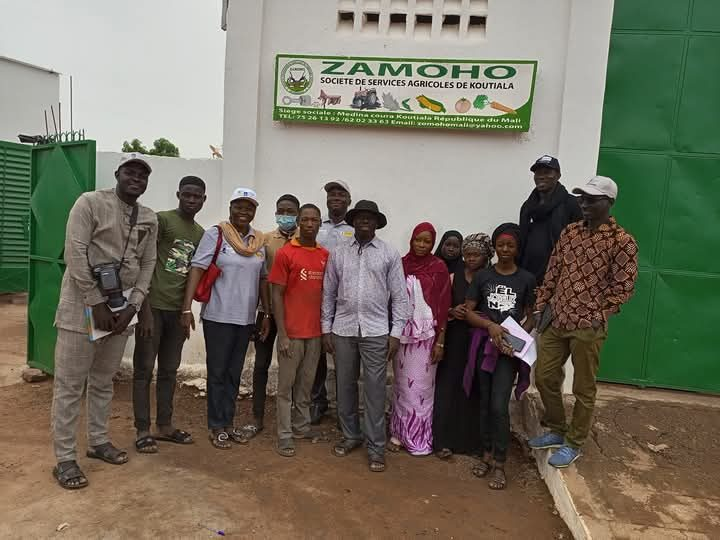
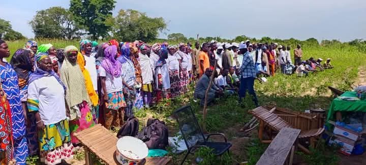
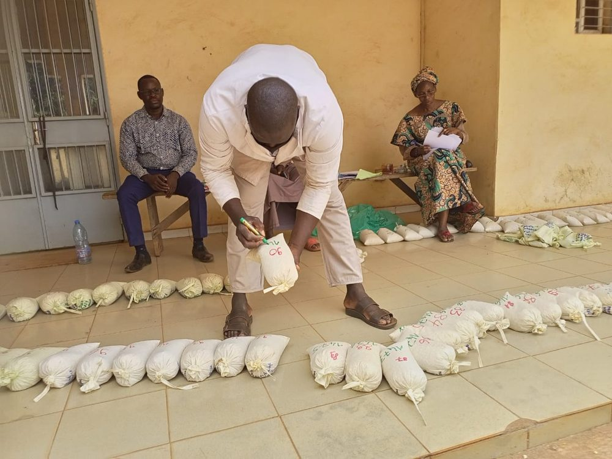
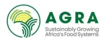
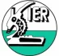
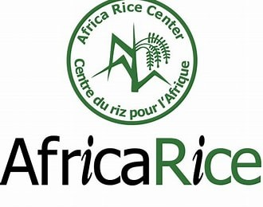
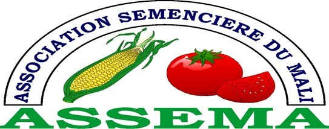
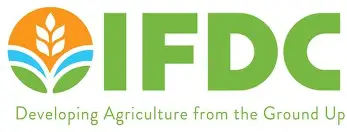
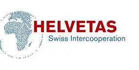

Cultivons l'avenir ensemble
ZAMOHO, acteur majeur de la transformation agricole au Mali. Semences certifiées, accompagnement paysan et innovations durables.
Nos services CollaborerSociété de Services Agricoles de Koutiala « ZAMOHO »
Plus de 10 ans d'expertise
ZAMOHO (Société Coopérative Simplifiée de Services Agricoles de Koutiala) a été fondée avec une vision claire : améliorer durablement les revenus des producteurs grâce à des semences de qualité, des services de proximité et des pratiques innovantes. Basée à Koutiala, nous intervenons dans les régions de Sikasso et Ségou, zones à fort potentiel agricole.
Notre équipe est composée d’agents permanents qualifiés et d’un réseau de plus de 1 000 producteurs semenciers. Nous formons et accompagnons des groupements de femmes et de jeunes afin de renforcer leurs capacités et de favoriser leur autonomisation économique.

Une agriculture résiliente et prospère
Semences de qualité
Production et certification de semences améliorées (maïs, sorgho, mil, niébé, riz…) pour des rendements optimisés.
Appui aux producteurs
Renforcement des capacités, parcelles de démonstration et suivi technique personnalisé.
Inclusion & genre
105 femmes productrices formées en 2025, réseau de revendeuses et accès équitable aux ressources.
Conservation des sols
Aménagements en courbes de niveau (ACN) pour restaurer les terres et préserver l'environnement.
Activités récentes

Journée paysanne à Ntogonasso
Plus de 200 producteurs ont participé à la démonstration de variétés améliorées de maïs et sorgho.
Lire la suite →
255 courbes de niveau réalisées
Projet AEDTT 2 : restauration des sols sur 121 hectares dans les cercles de Kita, Kati et Dioïla.
Lire la suite →
Certification de 44,6 tonnes de semences
Maïs, sorgho, mil, niébé… toutes nos semences répondent aux normes nationales.
Lire la suite →Ils nous font confiance
Partenariats techniques et institutionnels pour le développement agricole






Équipe dirigeante
Les membres du conseil d’administration et de la direction.
Prêt à booster votre production ?
Contactez notre équipe pour bénéficier de semences certifiées et d’un accompagnement technique de proximité.
Échanger avec ZAMOHO